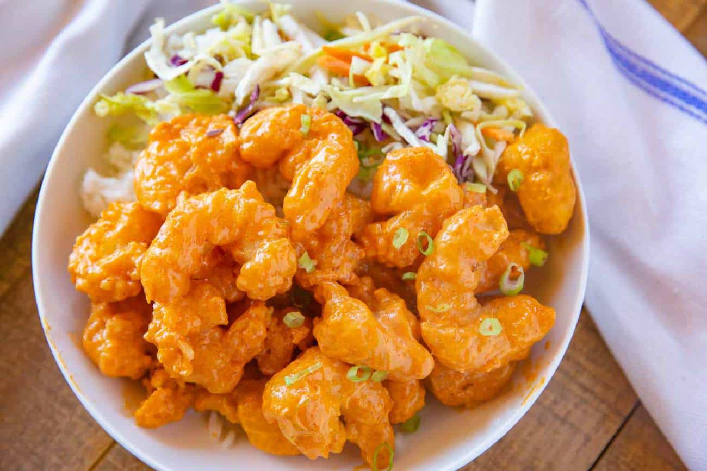

Home
Dynamite Shrimp

Description
A perfect appetizer or main course when served with rice that is best eaten immediately.
Ingredients
- 15-20 Shrimp peeled and deveined
- 1/4 teaspoon paprika or chili powder
- 1/4 teaspoon salt
- 1/4 teaspoon black pepper
- 1 tablespoon soy sauce
- 1 small egg
- Oil for deep frying
Coating
- 1/4 cup cornflour/cornstarch
- 1 teaspoon garlic powder
- pinch salt
Sauce
- 1/2 cup Mayonnaise
- 5 tablespoons hot sauce (sriacha or other)
<1i>3 tablespoons tomato ketchup
- 1/4 tsp paprika or chili powder
- 1 teaspoon honey
- 1 clove garlic minced
- 1/4 teaspoon seasame oil
- 1 tsp white vinegar
Garnish
- lettuce
- spring onions or chives chopped
- sesame seeds
Steps
- Start cooking rice in instapot
- In a medium sized bowl, combine the sauce ingredients
- Wash the shrimp, and drain on kitchen paper. Pat dry with kitchen paper so that the shrimp are fairly dry.
- In a medium sized bowl, combine the batter ingredients, and whisk. Add the shrimp and mix well until coated.
- Heat oil in a large pot and fry the shrimp for about 1-2 minutes. To make sure the oil is at right temperature, first test it by adding a bit of the batter to the oil. If it sizzles, it means the oil is at the right temperature. Fry only 2 or 3 shrimp at a time in order to maintain the temperature of the oil.
- Drain the shrimp on kitchen paper.
- Add the fried shrimp to coat with the sauce.
- Serve immediately.